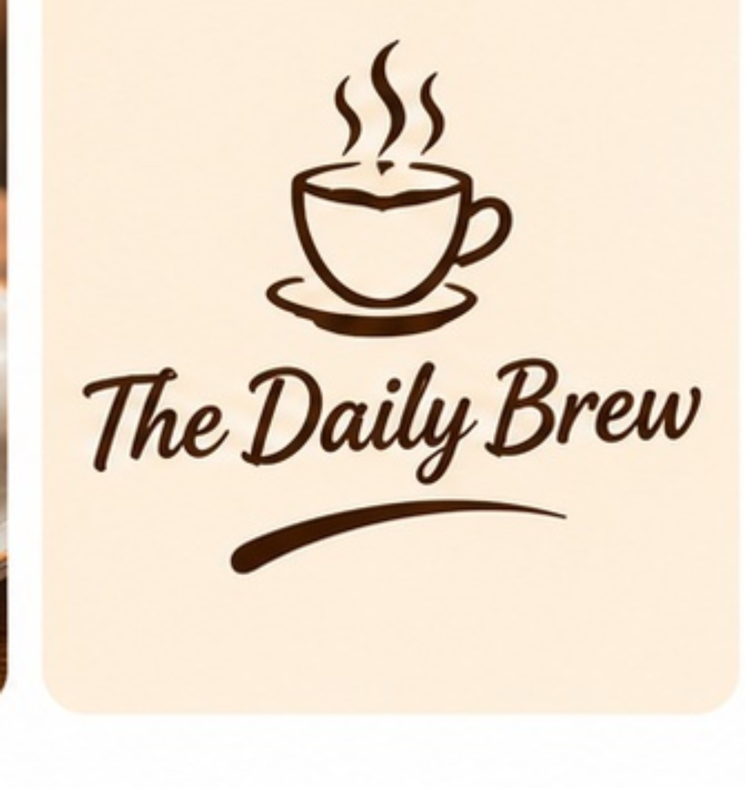
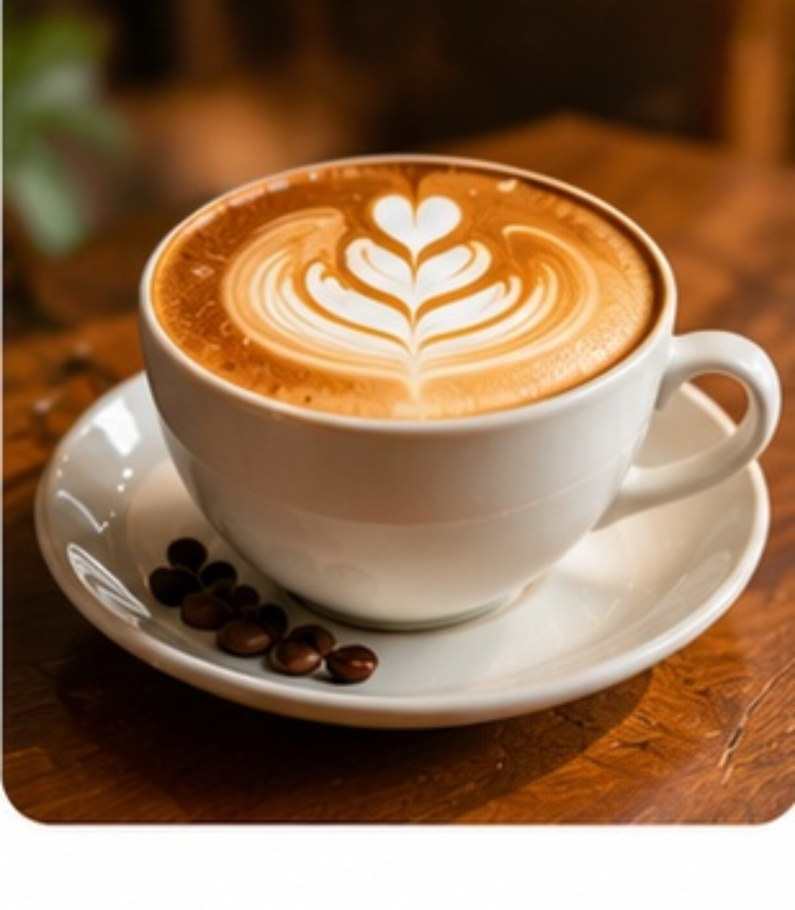

Made fresh
Good ingredients and freshly prepared favourites, made for the moment.

A LITTLE ABOUT US
A welcoming corner for slow sips, good conversations and everyday celebrations.

BREWEDOUR STORY
At The Daily Brew, we believe a café should feel like your favourite part of the day. The aroma of fresh coffee, a bite worth slowing down for and a space where everyone feels welcome.
That’s the simple idea behind everything we do: thoughtful coffee, comforting food and moments that stay with you long after the last sip.
See what’s brewing →WHAT MATTERS TO US
The recipe is simple. Make it fresh, make it welcoming, make it worth coming back for.
Good ingredients and freshly prepared favourites, made for the moment.
A relaxed place to catch up, take a break or enjoy a little time to yourself.
Because the best café memories are often the simplest ones.
Come for the coffee.
Stay for the feeling.